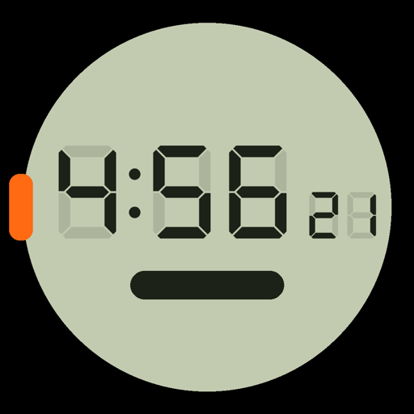
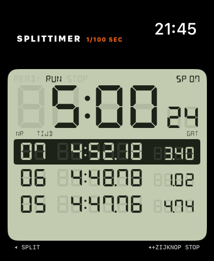
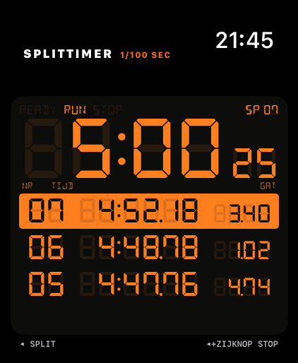
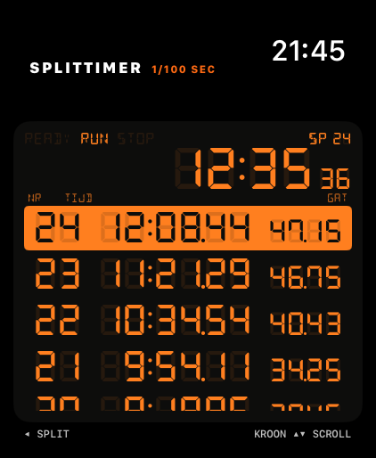
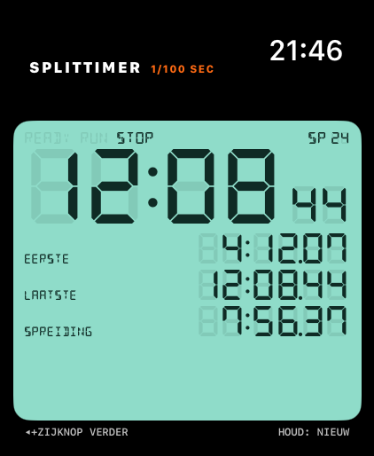

Klok een hele groep met één start.
Groepsstopwatch voor Apple Watch
Je start één keer. Daarna legt elke tik, of elke druk op de actieknop van de Apple Watch Ultra, de totale tijd sinds de start vast als genummerde split. Finishen er tien lopers? Dan druk je tien keer. Geen namen intypen, geen iPhone nodig.




Zo werkt het
- StartDruk op de actieknop van de Apple Watch Ultra, of tik op het scherm van een andere Apple Watch. De klok loopt in honderdsten van een seconde.
- SplitElke tik of druk op de actieknop legt de totale tijd vast als genummerde split, met het gat tot de vorige loper. Je ogen blijven bij de finish.
- Stop en exporteerHoud het scherm ingedrukt (of actieknop + zijknop) om te stoppen. Je ziet eerste, laatste en spreiding en exporteer de sessie als CSV.
De actieknop instellen
Op de Apple Watch Ultra koppel je de actieknop één keer aan SplitTimer:
Instellingen › Actieknop › Training › SplitTimerKies de training Groepstimer. De eerste druk start de klok, elke volgende druk is een split. Actieknop + zijknop zet de klok stil en later weer door; de stilstand telt niet mee. Start het niet? Open SplitTimer één keer en sta de Gezondheid-toestemming voor trainingen toe. Zonder die toestemming geeft watchOS de actieknop niet aan de app.
Op elke andere Apple Watch
Tik ergens op het scherm voor een split. Op de Series 9 of nieuwer en de Ultra 2 of nieuwer werkt ook dubbeltikken. Houd een seconde ingedrukt om te stoppen.
Voor wie
- Atletiektrainers en clubtrainers die een groep klokken
- Gymdocenten: veldloop, Cooper, 1000 meter of mijl
- Sportdagen en recreatieve loopjes op school
- Iedereen die meer dan één persoon tegelijk tijd opneemt
Privacy
Geen account, geen server, geen tracking. Je sessies blijven op je horloge. Tijdens het timen draait SplitTimer een trainingssessie, zodat de app in beeld blijft en de actieknop blijft werken. Een afgesloten sessie komt alleen in Gezondheid als je dat zelf aanzet, en dan met alleen de duur. Lees het privacybeleid
Compatibiliteit en prijs
- Platform
- Alleen Apple Watch (watchOS 11 of nieuwer). Geen iPhone-app.
- Actieknop
- Apple Watch Ultra
- Tik en dubbeltik
- Elke ondersteunde Apple Watch (dubbeltik: Series 9 of nieuwer, Ultra 2 of nieuwer)
- Talen
- 8
- Uiterlijk
- Retro LCD, drie thema's
- Prijs
- €2,99, eenmalig
Veelgestelde vragen
De actieknop start SplitTimer niet.
Open SplitTimer één keer en sta de Gezondheid-toestemming (trainingen) toe. Zonder die toestemming geeft watchOS de actieknop niet aan de app. Controleer Instellingen › Gezondheid › Apps › SplitTimer.
Waarom start SplitTimer een training?
Op de Apple Watch Ultra kunnen apps de actieknop alleen gebruiken via een training. De training houdt de klok in beeld. Er wordt niets in Gezondheid opgeslagen tenzij je "Bewaar als training in Gezondheid" aanzet in de instellingen van de app.
Kan ik verder na per ongeluk stoppen?
Ja: druk nog eens op actieknop + zijknop. Op andere modellen houd je het scherm opnieuw vast en kies je Verder tellen. De stilstand telt niet mee, net als bij een gewone stopwatch.
Waar staan mijn sessies?
Alleen op je horloge. Veeg naar links naar de sessiespagina; tik op een sessie om die als CSV te exporteren.
Support en contact
Vragen, ideeën of een probleem? Mail naar barthak32@gmail.com. Ik lees elk bericht.